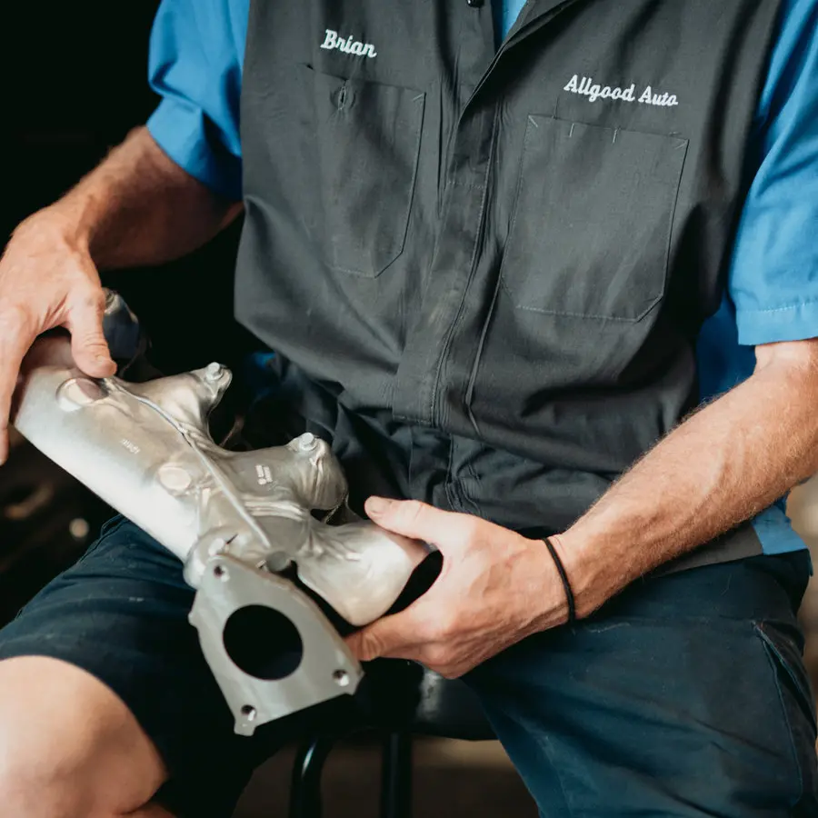
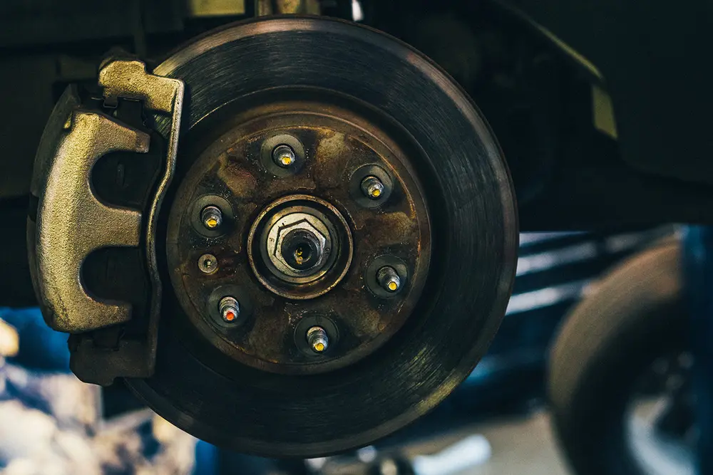
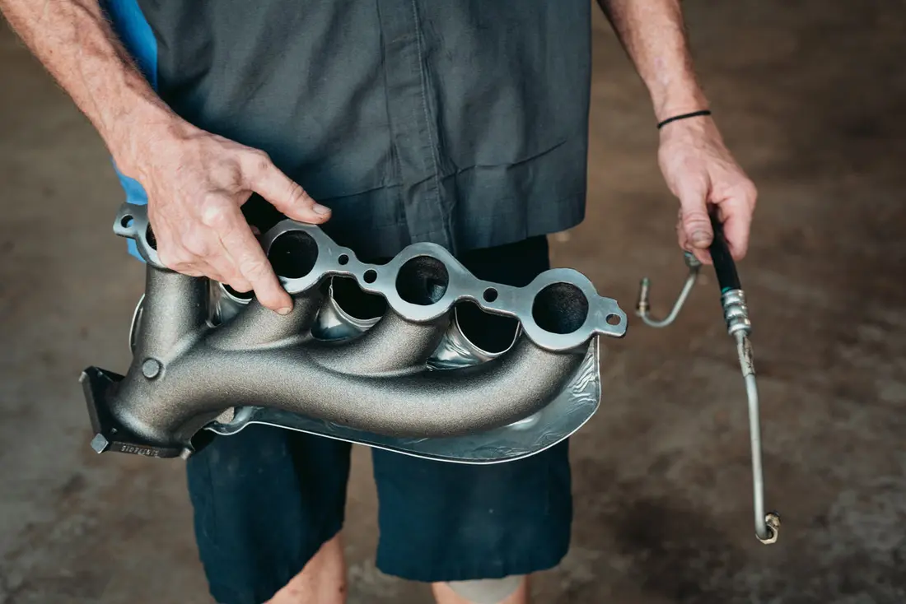

Diagnostics & Check Engine Lights
Advanced computer diagnostics and hands-on testing to identify the real cause—not just the symptom.
COMPLETE AUTO REPAIR · ALL MAKES & MODELS
Denton drivers deserve repairs explained clearly and completed with care. From maintenance to major engine and transmission work, Allgood helps you understand what needs attention now—and what can wait.

WHAT WE DO
Modern diagnostics, experienced technicians, and repairs backed by a serious warranty. If you are unsure where to start, call—we will help you make a sensible plan.
Advanced computer diagnostics and hands-on testing to identify the real cause—not just the symptom.
Skilled repair for major powertrain issues. Remanufactured engines and transmissions include 3-year/100,000-mile warranty coverage.
Inspection and repair for dependable stopping, from worn pads to complete brake concerns.

Diagnosis and repair to get your cabin comfortable again through the Texas heat.
Shocks, struts, steering, and suspension repairs for a safer, smoother drive.
Routine service, fluid checks, and comprehensive pre-purchase inspections for used vehicles.

WHY ALLGOOD
Allgood was built around a simple idea: people should be able to trust their repair shop. That means careful work, straightforward explanations, and recommendations that respect your priorities and budget.
Honest assessmentsClear guidance on what needs immediate attention and what can wait.
Quality workmanshipExperienced technicians with modern diagnostic and repair equipment.
Built-in convenienceFree courtesy rides, on-site parking, and a monitored 24-hour key drop.
DENTON DRIVERS SAY IT BEST
Best place and prices in town.
Excellent work at a price cheaper than market value!
They are friendly, professional & all round good group of people.
COME SEE US
LET’S GET YOU BACK ON THE ROAD